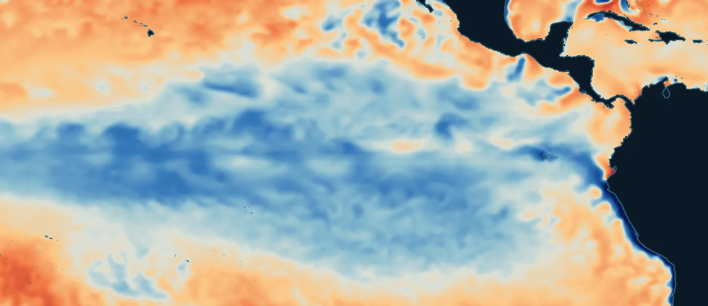
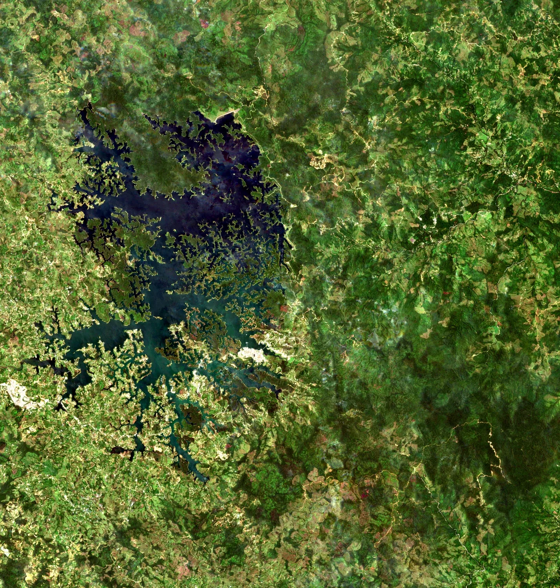
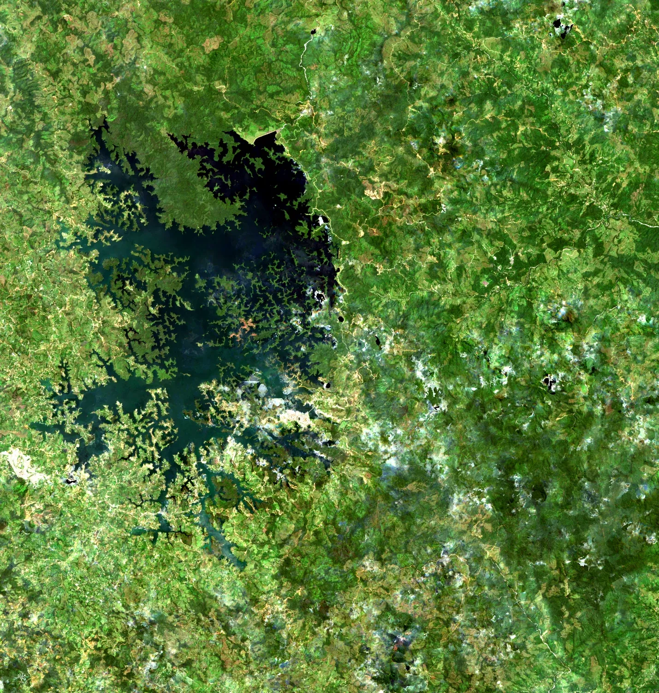

Capítulo 01 El embalse que se llena con gas
El Niño y la luz.
Del calentamiento del Pacífico al embalse de Peñol–Guatapé. Recorre el fenómeno mes a mes y sigue su huella en la electricidad de Colombia.
Peñol–Guatapé, Antioquia · Vuelo renderizado en Blender
01 · El video Capítulo 01
El embalse que se llena con gas.
El Niño calienta el Pacífico, llueve menos en los Andes y los embalses bajan. Para cuidarlos, las térmicas, entre ellas las de gas, generan más. Míralo y luego explora cada escena.
- Formato
- Vertical 9:16
- Duración
- —
- Capítulo
- 01 · Agua
02 · Pacífico tropical 2023–2026
El Niño, mes a mes.
Sigue la mancha cálida en la franja ecuatorial. Desplázate por la página o mueve el control para cambiar de mes.

En 2023, la anomalía pasa de valores negativos a un máximo en noviembre.
Fuente NOAA OISST v2.1 · Serie diaria Niño 3.4
03 · Relieve 3D Cuenca del río Nare
Vuela sobre Guatapé.
Arrastra para girar, usa Ctrl + rueda o los botones para acercarte y pasa el cursor para leer la altitud. Activa «Antes / después» para cortar el modelo entre 2022 y 2026.
Alturas de la escena de Blender de la producción (exageración ajustable) · Texturas Copernicus Sentinel-2 · Caja 75,05–75,25° O, 6,15–6,36° N
04 · Sentinel-2 Dos periodos, el mismo embalse
El borde del agua.
Arrastra la cortina para comparar la mediana de junio a diciembre de 2022, un año húmedo, con la de agosto a octubre de 2026. Activa la lupa para mirar las orillas de cerca.


20222026XM Volumen útil del embalse Peñol
¿Cuánta agua había?
Las imágenes muestran la superficie. El volumen lo mide XM cada día. Estos son los promedios de los dos periodos de las imágenes.
XM publica el volumen útil como porcentaje de la capacidad útil, por eso puede superar 100 %. Las franjas marcan los periodos de las imágenes. CSV diario
Otros embalses, mismo par de fechas.
Pasa el cursor sobre cada imagen para mover la cortina. Debajo, el volumen útil medio de 2022 → 2026.
05 · CHIRPS · XM De la nube al enchufe
Del agua a la energía.
La lluvia alimenta los ríos. Cuando bajan los aportes, las centrales térmicas, incluidas las de gas, pueden cubrir parte de la demanda y aliviar el uso de los embalses.
Cargando la figura de la central…
Lluvia mensual en Colombia
Cargando datos…

Siguiente Capítulo 02
Guardar el sol para la noche.
Continuar el recorrido